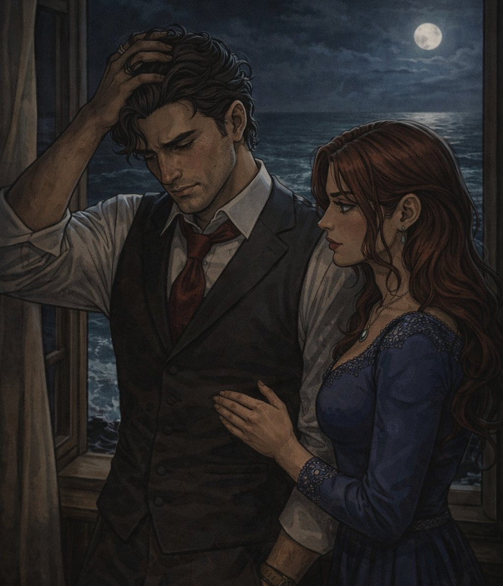

Capitolo 8: La Serata Fatale
Leggi il capitolo in una pagina pulita e passa agli esercizi solo quando vuoi.

La villa di Don Salvatore brillava di luci e di eleganza. I migliori vestiti, i profumi raffinati, il tintinnio dei bicchieri di cristallo: tutto parlava di potere e ricchezza. Alessio e Laura, vestiti in abiti eleganti, si muovevano tra gli invitati con naturalezza, mentre Maria, al centro della sala, veniva accolta da Don Salvatore con un inchino da antico cavaliere.
"Maria, stasera il cielo è sceso a Málaga," le disse, prendendole la mano e baciandola con devozione. "La tua musica è un dono divino."
Maria sorrise, modesta, ma i suoi occhi brillavano di determinazione. "Grazie, Don Salvatore. Suonerò per voi le melodie che amo di più."
E così iniziò.
Le Melodie dell'Inganno
1. "Nel Blu Dipinto di Blu" (Volare) - Le note allegre e spensierate fecero sorridere tutti, creando un'atmosfera di festa.
2. "Caruso" - La malinconia della canzone commosse persino le guardie più burbere, che asciugarono furtive lacrime.
3. "Con te partirò" - La potenza del brano incantò la sala, e Don Salvatore la fissava come ipnotizzato, dimentico di tutto.
La famiglia mafiosa, riunita nella sala, applaudiva entusiasta. "Che talento!" sussurravano tra loro. Nessuno sospettava nulla.
Il Segnale
Laura incrociò lo sguardo di Alessio e fece un cenno quasi impercettibile con la testa. Era il momento.
Alessio annuì e, con movimenti discreti, estrasse il suo coltello svizzero, aprendo con cura il minuscolo strumento per forzare serrature. Mentre Maria iniziava la versione ipnotica di "Bella Ciao", Alessio si mosse verso la teca del violino d’oro. L'Ipnosi
Le note di "Bella Ciao" risuonavano lente, ripetitive, quasi ossessive. Don Salvatore, seduto in prima fila, aveva lo sguardo perso nel vuoto. Le sue palpebre si fecero pesanti, il respiro rallentò. Intorno a lui, anche gli altri invitati sembravano cadere in una strana tranquillità, come se il tempo si fosse fermato.
Alessio lavorò in fretta. La serratura della teca cedette con un clic appena percettibile. Le sue dita si chiusero attorno al violino d’oro, che luccicò per un attimo nella penombra.
La Fuga
Maria continuava a suonare, ma i suoi occhi seguivano Alessio. Laura, intanto, si avvicinò alla porta, pronta a coprirli in caso di necessità.
Per un momento, tutto sembrò perfetto.
Ma poi...
Uno scatto.
Una delle guardie, meno influenzata dalla musica, storse la testa e vide Alessio con il violino in mano.
"HEY!" urlò, rompendo l’incantesimo musicale.
Don Salvatore si scosse di colpo, gli occhi pieni di rabbia. "TRADIMENTO!"
Maria smise di suonare di colpo. Laura afferrò Alessio per un braccio. "CORRI!"
I tre si lanciarono verso l’uscita, mentre alle loro spalle la villa esplodeva in un caos di urla e ordini contraddittori.
Fuori, nella notte
Correvano a perdifiato, il violino d’oro stretto tra le braccia di Alessio. Maria ansimava, ma non smetteva di ridere. "Ce l’abbiamo fatta!"
Laura guardò Alessio, e per un attimo i loro occhi si incontrarono. "Ora siamo liberi," sussurrò.
Ma Alessio, mentre correva, sentiva ancora le note di "Bella Ciao" risuonargli nella mente... e il ricordo degli occhi di Maria che lo guardavano mentre suonava.